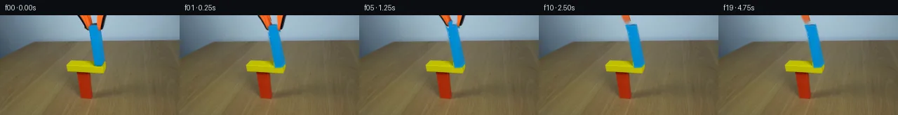

![首帧]()

Round 00
2026-11-05T11:03:06.524055+00:00像素候选变化代码 +223/−0inspection 更新
pixels 33cff9a4033c61fe · code fe36e3256e59c328
查看本轮 generate.py 真实 diff
--- previous/generate.py +++ current/generate.py @@ -0,0 +1,223 @@ +from pathlib import Path + +import cv2 +import numpy as np +from PIL import Image, ImageDraw, ImageFont + +import artifact_io + + +ROOT = Path(__file__).resolve().parent +W, H = 256, 144 + + +def feather(mask, radius=0.75): + """Return a softly antialiased float alpha from a uint8 mask.""" + if radius <= 0: + return mask.astype(np.float32) / 255.0 + return cv2.GaussianBlur(mask, (0, 0), radius).astype(np.float32) / 255.0 + + +def polygon_mask(points, blur=0.0): + m = np.zeros((H, W), np.uint8) + cv2.fillPoly(m, [np.asarray(points, np.int32)], 255, lineType=cv2.LINE_AA) + return feather(m, blur) + + +def composite(dst, rgb, alpha): + a = np.clip(alpha[..., None], 0.0, 1.0) + return np.clip(dst.astype(np.float32) * (1.0 - a) + rgb.astype(np.float32) * a, 0, 255).astype(np.uint8) + + +def warp_layer(rgb, alpha, center, angle=0.0, dx=0.0, dy=0.0): + mat = cv2.getRotationMatrix2D(center, angle, 1.0) + mat[:, 2] += (dx, dy) + wrgb = cv2.warpAffine(rgb, mat, (W, H), flags=cv2.INTER_CUBIC, + borderMode=cv2.BORDER_CONSTANT, borderValue=(0, 0, 0)) + wa = cv2.warpAffine(alpha.astype(np.float32), mat, (W, H), flags=cv2.INTER_CUBIC, + borderMode=cv2.BORDER_CONSTANT, borderValue=0) + return wrgb, np.clip(wa, 0.0, 1.0) + + +def make_clean_base(src): + """Remove the moving blue block and gripper, preserving the locked set.""" + remove = np.zeros((H, W), np.uint8) + # Blue silhouette plus both fingers. These are deliberately tight so the + # original tabletop and wall stay bit-for-bit fixed elsewhere. + cv2.fillPoly(remove, [np.array([(122, 12), (142, 11), (151, 73), + (136, 77), (126, 57)], np.int32)], 255) + cv2.fillPoly(remove, [np.array([(109, 0), (124, 0), (134, 18), + (130, 25), (121, 21)], np.int32)], 255) + cv2.fillPoly(remove, [np.array([(138, 0), (154, 0), (151, 11), + (146, 25), (138, 23)], np.int32)], 255) + remove = cv2.dilate(remove, np.ones((3, 3), np.uint8), iterations=1) + clean = cv2.inpaint(src, remove, 3, cv2.INPAINT_TELEA) + + # Put back all unobscured original yellow and red pixels. Color masks are + # restricted to hand-measured ROIs to avoid selecting the wood background. + hsv = cv2.cvtColor(src, cv2.COLOR_RGB2HSV) + yellow = cv2.inRange(hsv, (20, 120, 80), (42, 255, 255)) + red1 = cv2.inRange(hsv, (0, 120, 50), (18, 255, 255)) + roi_y = np.zeros((H, W), np.uint8); roi_y[61:87, 91:155] = 255 + roi_r = np.zeros((H, W), np.uint8); roi_r[72:125, 105:137] = 255 + yellow = cv2.bitwise_and(yellow, roi_y) + red = cv2.bitwise_and(red1, roi_r) + fixed = cv2.bitwise_or(yellow, red) + fixed = cv2.morphologyEx(fixed, cv2.MORPH_CLOSE, np.ones((3, 3), np.uint8)) + fixed_a = feather(cv2.dilate(fixed, np.ones((3, 3), np.uint8), iterations=1), 0.55) + clean = composite(clean, src, fixed_a) + + # Reconstruct the sliver of yellow top/front originally hidden by blue. + # Colors are extrapolated from the immediately adjacent visible faces. + yy = clean.astype(np.float32) + top = np.zeros((H, W), np.uint8) + cv2.fillPoly(top, [np.array([(130, 67), (145, 68), (150, 72), (134, 73)], np.int32)], 255) + front = np.zeros((H, W), np.uint8) + cv2.fillPoly(front, [np.array([(134, 73), (150, 72), (148, 82), (134, 82)], np.int32)], 255) + for y in range(64, 84): + # Mild face gradients mimic the soft left-side key light. + yy[y, :, :] = yy[y, :, :] + top_rgb = np.empty_like(src); top_rgb[:] = (202, 199, 3) + front_rgb = np.empty_like(src); front_rgb[:] = (181, 177, 2) + clean = composite(clean, top_rgb, feather(top, 0.45)) + clean = composite(clean, front_rgb, feather(front, 0.45)) + + # Restore the visible fixed block surfaces once more, excluding the area + # that was occluded by blue in the source. + blue_hole = np.zeros((H, W), np.uint8) … diff truncated; 136 more lines …